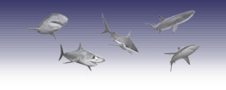

#!/usr/bin/perl5 -s

#######################################################################################################
# Company: NetMedia Solutions                                                                         #
# Date: Saturday, September 21, 2001                                                                  #
# Location: Los Angeles, California, United States of America                                         #
# Made By: Luis Rodriguez (drlouie)                                                                   #
# Email: drlouie@tstonramp.com                                                                        #
#                                                                                                     #
# CoastlineMicro.com's Contact Us section template. Dynamically driven by DHTML, HTML, Perl and MySql #
#                                                                                                     #
#######################################################################################################

require ("referer.nsp"); 
require ("parse_query.nsp");
require ("date.nsp");

if ($FORM{'title'}) { 
	$title = "$FORM{'title'}";
	$filename = "content/products/$title.txt";
	$dropme = `cat $filename`;
	$legal = `cat legal.nsf`;
	$browser = "$ENV{'HTTP_USER_AGENT'}";
	$pow = `cat pow_products.nsf`;
	## must have command to run search
	$powbutton = "";	

print "Content-type: text/html\n\n";

{
print <<EOF

<html>
<head>
<title>Coastline Micro Inc. - Everything Intel</title>
<SCRIPT LANGUAGE="JavaScript">

///////////////////////////////////////////////////////////////////
// This script and its counterparts are ©2001 NetMedia Solutions //
// For use ONLY with CoastlineMicro.com                          //
// To re-use or have this script re-interfaced for your specific //
// needs please contact SServices\@NetMediaSolutions.com         //
// Prices are cheap for re-interfacing of current scripts and    //
// programs, so email us today to get you own LEGAL programming  //
// licensed for use only on YOUR site(s) or for YOUR purpose(s). //
///////////////////////////////////////////////////////////////////

<!-- Begin
function loadScript() {
if (document.getElementById) {  // DOM3 = IE5, NS6
document.getElementById('hidepage').style.visibility = 'hidden';
}
else {
if (document.layers) {  // Netscape 4
document.hidepage.visibility = 'hidden';
}
else {  // IE 4
document.all.hidepage.style.visibility = 'hidden';
      }
   }
}
//  End -->
</script>
<style type="text/css">
#hidepage {z-index:2000}
body { scrollbar-face-color:#F2F2F7; scrollbar-highlight-color:#F2F2F7; scrollbar-shadow-color:#8f8fab; scrollbar-3dlight-color: #333366; scrollbar-arrow-color:#333366; scrollbar-track-color:#F2F2F7; scrollbar-darkshadow-color:#8f8fab; }
</style>
<div id="hidepage" style="position: absolute; left:0px; top:0px; background-color: #FFFFFF; layer-background-color: #FFFFFF; height: 100%; width: 100%;">
<table width=100% cellpadding="0" cellspacing="0">
<tr height="100%"><td align="center" valign="middle"><br><br><font face="verdana,arial,helvetica" size="2" color="#333366"><br><br>Loading DHTML interactive user interface, please wait...<br><br><br><br><br><font size="1"><b><u>Compatibility</u></b><br><br>Win/Mac MSIE 4/5/6<br>Win/Mac/Linux Netscape 4/6<br><br><i>Best if viewed on Windows 95/98/2000 platform using MSIE 4+</i></font></font></td></tr>
</table>
</div> 
<script language="JavaScript" src="js/reload.js"></script>

<!--FOLLOWING EXTERNAL SCRIPT IS USED FOR BROWSER TESTING AND IS INTEGRAL PART OF POW-->
<script language="JavaScript" src="js/dynlayer.js"></script>
<!--END-->

<meta http-equiv="Content-Type" content="text/html; charset=iso-8859-1">
<meta name="keywords" content="coastlinemicro.com, www.coastlinemicro.com, coastline, micro, irvine, ca, california, about, company, location, businsess, competition, competitors, solutions, irvine, california, technology, ceo, own, partner, fast, reliable, heritage, sophisticated, computer, system, build, custom, sample, guarantee, search, product">
<meta name="description" content="Coastline Micro Inc. is in business to develop hardware solutions that make sense for the small to corporate sized business arena. We have been in business for over a decade and have the knowledge and expertise necessary to be competitive in the market. Our every product carries a 100% Product Satisfaction Guarantee. We are located in Irvine, California at 60 N. Technology Drive. For more information about our company and its what it is in business to do please follow the link above. Our company's Heritage dates back to 1989.">
<script language="JavaScript" src="js/menu_config.js"></script>
<LINK REL="STYLESHEET" HREF="common_css.html" Type="text/css">

</head>
<body bgcolor="#ffffff" text="#333366" leftmargin="0" topmargin="0" marginwidth="0" marginheight="0" onLoad="javascript:loadScript();runSearch();">

<!-- Copyright NetMedia Solutions and Coasltine Micro, Inc.-->
<script language="Javascript" src="js/menu_constructor.js"></script>

<!-- Start header table -->
<table width="100%" border="0" cellspacing="0" cellpadding="0" background="images/newones/top_tablebg_main.jpg" height="100">
  <tr> 
    <td width="30%"></td>
    <td align="right" valign="top" width="70%"><font size="1" color="#ffffff" face="verdana,arial,helvetica">$date&nbsp;&nbsp;<font size="3">&nbsp;</font></font>
	<center>&nbsp;</center></td>
  </tr>
</table>
<!-- End header table -->

<table width="100%" border="0" cellspacing="0" cellpadding="0">
  <tr>
    <td width="175" align=left valign=top>$powbutton $legal</td>
    <td width="5"></td>
    <td width="100%" align="center" valign=top>$dropme</td>
  </tr>
</table>

<!-- Dynamic Moving Layers -->
$pow

</body>
</html>

EOF
}
}

else {
$sorry = `cat sorry_nospec.nsf`;

print "Content-type: text/html\n\n";
{
print <<EOF

$sorry

EOF
}
}
exit;